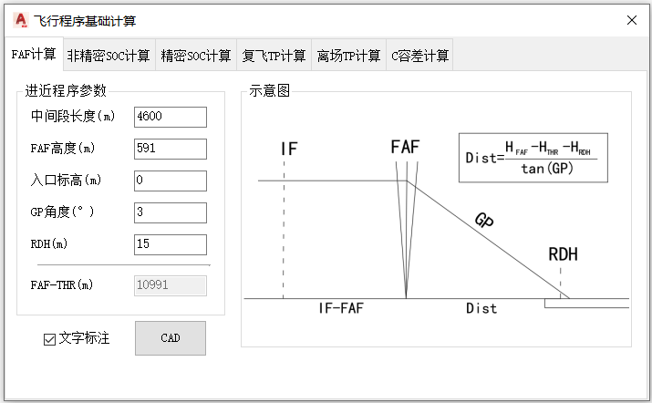
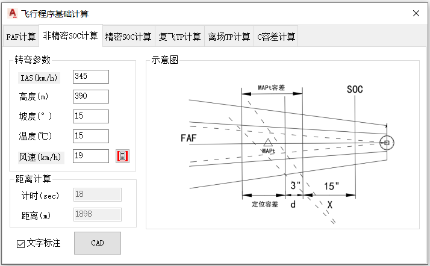
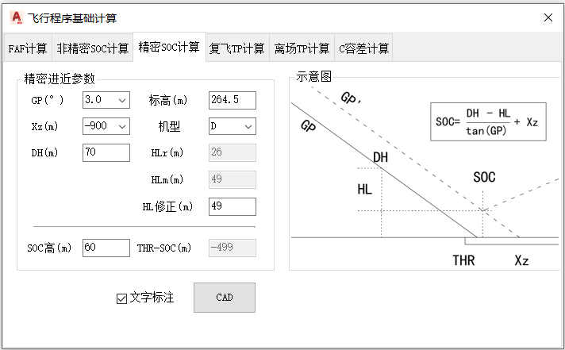
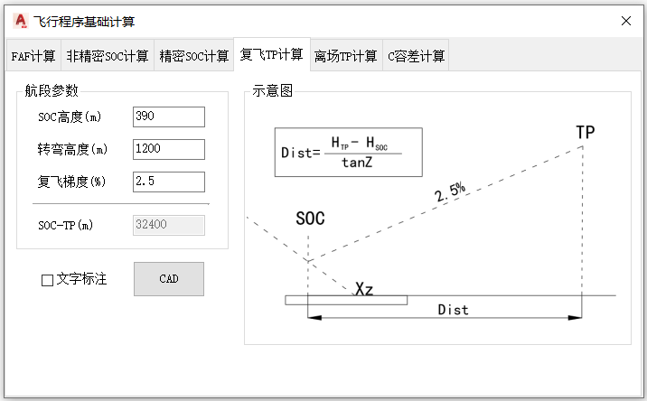
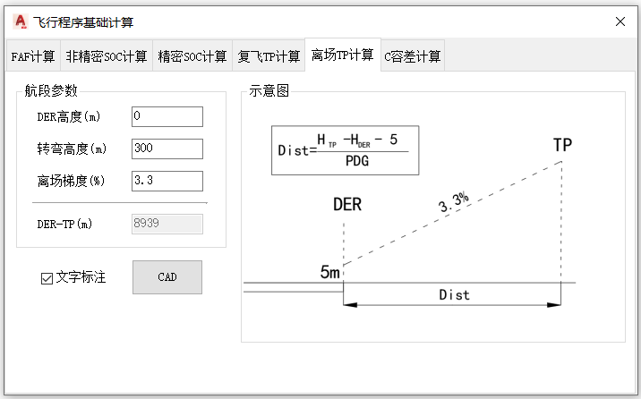
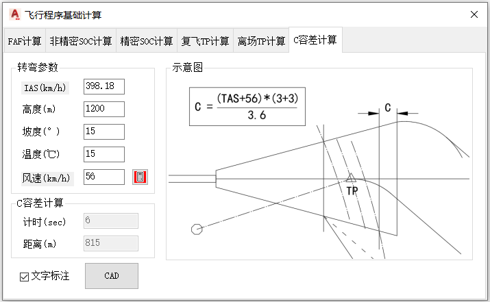

功能简介
【飞行程序基础计算】是一个综合计算模块，集成了 FAF、SOC、C 容差以及离场 / 复飞转弯点等常用距离计算。每个计算功能都包含参数输入、示意图预览、文字标注选项与 CAD 绘制。
公共元素与通用操作
每个选项卡都包含相同的三类公共控件：
| 控件 | 说明 |
|---|---|
| 示意图区 | 显示当前计算模型的几何示意图，用于绘制前核对。 |
| 【文字标注】 | 勾选（默认开）后，绘制时一并标注计算文字。 |
| 【CAD】 | 把当前选项卡的计算结果绘制到CAD窗口；绘制时按命令行提示拾取基准点与方向。 |
通用操作步骤
- 命令行输入
Y02_基础计算打开窗口。 - 切换到需要的选项卡（FAF / 非精密SOC / 精密SOC / 复飞TP / 离场TP / C容差）。
- 填写该选项卡的参数，结果框与示意图会随参数自动更新。
- 如需标注文字，保持【文字标注】勾选。
- 点击【CAD】，按命令行提示拾取基准点与方向，把结果绘制到CAD窗口。
提示：各选项卡相互独立，分别对应不同的计算模型；灰色结果框为自动计算结果，无需手工输入。
选项卡一：FAF计算
界面截图

参数说明（进近程序参数）
| 控件 | 默认值 | 说明 |
|---|---|---|
| 中间段长度(m) | 10000 | IF 至 FAF 的中间进近段长度。 |
| FAF高度(m) | 900 | 最后进近定位点高度。 |
| 入口标高(m) | 300 | 跑道入口标高。 |
| GP角度(°) | 3 | 下滑角。 |
| RDH(m) | 15 | 入口基准高。 |
| FAF-THR(m) | 11162 | FAF至入口距离 = (FAF高度 − RDH − 入口标高) ÷ tan(GP角度)，随参数自动重算。 |
操作步骤
- 填写中间段长度、FAF 高度、入口标高、GP 角度、RDH。
- 软件自动计算 FAF 至 THR 距离。
- 点【CAD】，按提示拾取位置点，指定方向进行绘制。
选项卡二：非精密SOC计算
界面截图

参数说明
| 控件 | 默认值 | 说明 |
|---|---|---|
| 复飞参数计算 | IAS380 / 高度900 / 坡度25 / 温度15 / 风速19 | IAS(km/h)、高度(m)、坡度(°)、温度(℃)、风速(km/h)；IAS 与风速可点击标签更换数据单位（nm）。 |
| 计时(sec) | 18 | 复飞点（MAPt）定位容差最晚点与SOC之间的飞行时长。 |
| 距离(m) | 772 | 结果：计时飞行距离 = (TAS + 风速) × 计时 ÷ 3.6，自动计算。 |
操作步骤
- 在“空速计算”面板填写高度、IAS、温度、风速等参数。
- 核对自动计算的计时与距离。
- 点【CAD】，依次拾取“复飞定位容差最晚点”与“复飞方向”进行绘制。
选项卡三：精密SOC计算
界面截图

参数说明（精密进近参数）
| 控件 | 默认值 | 说明 |
|---|---|---|
| GP(°) | 3.0 | 下滑角，下拉选择 2.5～3.2（超过 3.2 时 APV 计算方法不同）。 |
| Xz(m) | -900 | THR—SOC 距离的偏移修正量，下拉选择 -900 / -1100 / -1400。 |
| DH(m) | 60 | 决断高。 |
| 标高(m) | 1800 | 机场标高；高于 900m 时自动对 HL 作标高修正。 |
| 机型 | D | 航空器分类 H / A / B / C / D，决定 HLm 与 HLr 取值。 |
| HLm(m) | 49 | 气压高度表高度损失，按机型自动取值，不可手输。 |
| HLr(m) | 26 | 无线电高度表高度损失，按机型自动取值，不可手输。 |
| HL修正(m) | 52.12 | 实际采用的 HL：标高 > 900m 时为 HLm + HLr × 0.02 × 标高 ÷ 300，否则等于 HLm；可手改。 |
| SOC高(m) | 0 | SOC 高度 = DH − HL修正，自动计算。 |
| THR-SOC(m) | 0 | THR至SOC 距离 = (DH − HL修正) ÷ tan(GP) + Xz，自动计算。 |
操作步骤
- 选择 GP 角度、Xz、机型，填写 DH 与机场标高。
- 核对自动计算的 HL修正、SOC高、THR-SOC 与示意图。
- 点【CAD】，按提示拾取“跑道入口点”与“复飞方向”进行绘制。
选项卡四：复飞TP计算
界面截图

参数说明（航段参数）
| 控件 | 默认值 | 说明 |
|---|---|---|
| SOC高度(m) | 100 | 复飞起始爬升点高度。 |
| 转弯高度(m) | 300 | 复飞转弯开始高度。 |
| 复飞梯度(%) | 2.5 | 复飞爬升梯度。 |
| SOC-TP(m) | 自动 | SOC 至转弯点距离 = (转弯高度 − SOC高度) ÷ 复飞梯度 × 100，随参数自动重算。 |
操作步骤
- 填写 SOC 高度、转弯高度、复飞梯度。
- 核对自动计算的 SOC-TP 距离。
- 点【CAD】，按提示拾取 SOC 点与复飞方向进行绘制。
选项卡五：离场TP计算
界面截图

参数说明（航段参数）
| 控件 | 默认值 | 说明 |
|---|---|---|
| DER高度(m) | 100 | 起飞末端高度。 |
| 转弯高度(m) | 300 | 离场转弯开始高度。 |
| 离场梯度(%) | 3.3 | 离场爬升梯度（PDG）。 |
| DER-TP(m) | 5909 | DER 至转弯点距离 = (转弯高度 − DER高度 − 5) ÷ 离场梯度 × 100，随参数自动重算。 |
操作步骤
- 填写 DER 高度、转弯高度、离场梯度。
- 核对自动计算的 DER-TP 距离。
- 点【CAD】，依次拾取 DER 与“离场方向”绘制。
选项卡六：C容差计算
界面截图

参数说明
| 控件 | 默认值 | 说明 |
|---|---|---|
| 空速计算面板 | IAS380 / 高度900 / 坡度15 / 温度15 / 风速56 | 换算C容差计算使用的真空速（TAS）。 |
| 计时(sec) | 6 | 飞行技术误差（C 容差）对应的计时，自动联动，不可手输。 |
| 距离(m) | 772 | 计时内飞行距离 = (TAS + 风速) × 计时 ÷ 3.6，自动计算。 |
操作步骤
- 在“空速计算”面板填写参数，核对自动计算的计时与距离。
- 点【CAD】，依次拾取“转弯最晚点”与“飞行方向”绘制 C 容差线。